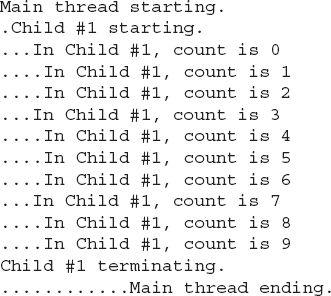
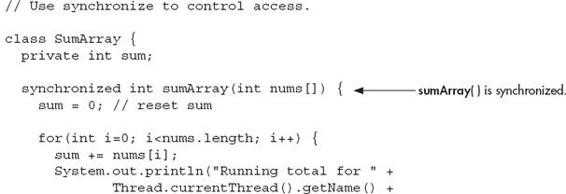
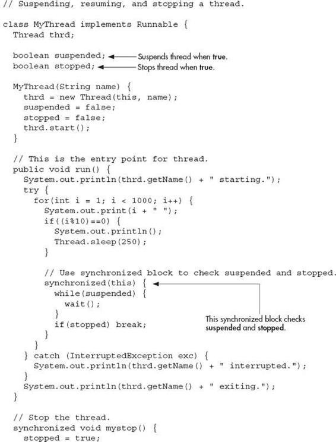

Chapter 11
Multithreaded Programming
Key Skills & Concepts
 Understand multithreading fundamentals
Understand multithreading fundamentals Know the Thread class and the Runnable interface
Create a thread
Create multiple threads
Determine when a thread ends
Use thread priorities
Understand thread synchronization
Use synchronized methods
Use synchronized blocks
Communicate between threads
Suspend, resume, and stop threads
Although Java contains many innovative features, one of its most exciting is its built-in support for multithreaded programming. A multithreaded program contains two or more parts that can run concurrently. Each part of such a program is called a thread, and each thread defines a separate path of execution. Thus, multithreading is a specialized form of multitasking.
Multithreading Fundamentals
There are two distinct types of multitasking: process-based and thread-based. It is important to understand the difference between the two. A process is, in essence, a program that is executing. Thus, process-based multitasking is the feature that allows your computer to run two or more programs concurrently. For example, it is process-based multitasking that allows you to run the Java compiler at the same time you are using a text editor or browsing the Internet. In process-based multitasking, a program is the smallest unit of code that can be dispatched by the scheduler.
In a thread-based multitasking environment, the thread is the smallest unit of dispatchable code. This means that a single program can perform two or more tasks at once. For instance, a text editor can be formatting text at the same time that it is printing, as long as these two actions are being performed by two separate threads. Although Java programs make use of process-based multitasking environments, process-based multitasking is not under the control of Java. Multithreaded multitasking is.
A principal advantage of multithreading is that it enables you to write very efficient programs because it lets you utilize the idle time that is present in most programs. As you probably know, most I/O devices, whether they be network ports, disk drives, or the keyboard, are much slower than the CPU. Thus, a program will often spend a majority of its execution time waiting to send or receive information to or from a device. By using multithreading, your program can execute another task during this idle time. For example, while one part of your program is sending a file over the Internet, another part can be reading keyboard input, and still another can be buffering the next block of data to send.
As you probably know, over the past few years, multiprocessor and multicore systems have become commonplace. Of course, single-processor systems are still in widespread use. It is important to understand that Java’s multithreading features work in both types of systems. In a single-core system, concurrently executing threads share the CPU, with each thread receiving a slice of CPU time. Therefore, in a single-core system, two or more threads do not actually run at the same time, but idle CPU time is utilized. However, in multiprocessor/multicore systems, it is possible for two or more threads to actually execute simultaneously. In many cases, this can further improve program efficiency and increase the speed of certain operations.
A thread can be in one of several states. It can be running. It can be ready to run as soon as it gets CPU time. A running thread can be suspended, which is a temporary halt to its execution. It can later be resumed. A thread can be blocked when waiting for a resource. A thread can be terminated, in which case its execution ends and cannot be resumed.
Along with thread-based multitasking comes the need for a special type of feature called synchronization, which allows the execution of threads to be coordinated in certain well-defined ways. Java has a complete subsystem devoted to synchronization, and its key features are also described here.
If you have programmed for operating systems such as Windows, then you are already familiar with multithreaded programming. However, the fact that Java manages threads through language elements makes multithreading especially convenient. Many of the details are handled for you.
The Thread Class and Runnable Interface
Java’s multithreading system is built upon the Thread class and its companion interface, Runnable. Both are packaged in java.lang. Thread encapsulates a thread of execution. To create a new thread, your program will either extend Thread or implement the Runnable interface.
The Thread class defines several methods that help manage threads. Here are some of the more commonly used ones (we will be looking at these more closely as they are used):
| Method |
Meaning |
| final String getName( ) |
Obtains a thread’s name. |
| final int getPriority( ) |
Obtains a thread’s priority. |
| final boolean isAlive( ) |
Determines whether a thread is still running. |
| final void join( ) |
Waits for a thread to terminate. |
| void run( ) |
Entry point for the thread. |
| static void sleep(long milliseconds) |
Suspends a thread for a specified period of milliseconds. |
| void start( ) |
Starts a thread by calling its run( ) method. |
All processes have at least one thread of execution, which is usually called the main thread, because it is the one that is executed when your program begins. Thus, the main thread is the thread that all of the preceding example programs in the book have been using. From the main thread, you can create other threads.
Creating a Thread
You create a thread by instantiating an object of type Thread. The Thread class encapsulates an object that is runnable. As mentioned, Java defines two ways in which you can create a runnable object:
You can implement the Runnable interface.
You can extend the Thread class.
Most of the examples in this chapter will use the approach that implements Runnable. However, Try This 11-1 shows how to implement a thread by extending Thread. Remember: Both approaches still use the Thread class to instantiate, access, and control the thread. The only difference is how a thread-enabled class is created.
The Runnable interface abstracts a unit of executable code. You can construct a thread on any object that implements the Runnable interface. Runnable defines only one method called run( ), which is declared like this:
Inside run( ), you will define the code that constitutes the new thread. It is important to understand that run( ) can call other methods, use other classes, and declare variables just like the main thread. The only difference is that run( ) establishes the entry point for another, concurrent thread of execution within your program. This thread will end when run( ) returns.
After you have created a class that implements Runnable, you will instantiate an object of type Thread on an object of that class. Thread defines several constructors. The one that we will use first is shown here:
Thread(Runnable threadOb)
In this constructor, threadOb is an instance of a class that implements the Runnable interface. This defines where execution of the thread will begin.
Once created, the new thread will not start running until you call its start( ) method, which is declared within Thread. In essence, start( ) executes a call to run( ). The start( ) method is shown here:
void start( )
Here is an example that creates a new thread and starts it running:
Let’s look closely at this program. First, MyThread implements Runnable. This means that an object of type MyThread is suitable for use as a thread and can be passed to the Thread constructor.
Inside run( ), a loop is established that counts from 0 to 9. Notice the call to sleep( ). The sleep( ) method causes the thread from which it is called to suspend execution for the specified period of milliseconds. Its general form is shown here:
static void sleep(long milliseconds) throws InterruptedException
The number of milliseconds to suspend is specified in milliseconds. This method can throw an InterruptedException. Thus, calls to it must be wrapped in a try block. The sleep( ) method also has a second form, which allows you to specify the period in terms of milliseconds and nanoseconds if you need that level of precision. In run( ), sleep( ) pauses the thread for 400 milliseconds each time through the loop. This lets the thread run slow enough for you to watch it execute.
Inside main( ), a new Thread object is created by the following sequence of statements:
As the comments suggest, first an object of MyThread is created. This object is then used to construct a Thread object. This is possible because MyThread implements Runnable. Finally, execution of the new thread is started by calling start( ). This causes the child thread’s run( ) method to begin. After calling start( ), execution returns to main( ), and it enters main( )’s for loop. Notice that this loop iterates 50 times, pausing 100 milliseconds each time through the loop. Both threads continue running, sharing the CPU in single-CPU systems, until their loops finish. The output produced by this program is as follows. Because of differences between computing environments, the precise output that you see may differ slightly from that shown here:

There is another point of interest to notice in this first threading example. To illustrate the fact that the main thread and mt execute concurrently, it is necessary to keep main( ) from terminating until mt is finished. Here, this is done through the timing differences between the two threads. Because the calls to sleep( ) inside main( )’s for loop cause a total delay of 5 seconds (50 iterations times 100 milliseconds), but the total delay within run( )’s loop is only 4 seconds (10 iterations times 400 milliseconds), run( ) will finish approximately 1 second before main( ). As a result, both the main thread and mt will execute concurrently until mt ends. Then, about 1 second later main( ) ends.
Although this use of timing differences to ensure that main( ) finishes last is sufficient for this simple example, it is not something that you would normally use in practice. Java provides much better ways of waiting for a thread to end. It is, however, sufficient for the next few programs. Later in this chapter, you will see a better way for one thread to wait until another completes.
One other point: In a multithreaded program, you often will want the main thread to be the last thread to finish running. As a general rule, a program continues to run until all of its threads have ended. Thus, having the main thread finish last is not a requirement. It is, however, often a good practice to follow—especially when you are first learning about threads.
Some Simple Improvements
While the preceding program is perfectly valid, some simple improvements will make it more efficient and easier to use. First, it is possible to have a thread begin execution as soon as it is created. In the case of MyThread, this is done by instantiating a Thread object inside MyThread’s constructor. Second, there is no need for MyThread to store the name of the thread since it is possible to give a name to a thread when it is created. To do so, use this version of Thread’s constructor:
Thread(Runnable threadOb, String name)
Here, name becomes the name of the thread.
Ask the Expert
Q: You state that in a multithreaded program, one will often want the main thread to finish last. Can you explain?
A: The main thread is a convenient place to perform the orderly shutdown of your program, such as the closing of files. It also provides a well-defined exit point for your program. Therefore, it often makes sense for it to finish last. Fortunately, as you will soon see, it is trivially easy for the main thread to wait until the child threads have completed.
You can obtain the name of a thread by calling getName( ) defined by Thread. Its general form is shown here:
final String getName( )
Although not needed by the following program, you can set the name of a thread after it is created by using setName( ), which is shown here:
final void setName(String threadName)
Here, threadName specifies the name of the thread.
Here is the improved version of the preceding program:
This version produces the same output as before. Notice that the thread is stored in thrd inside MyThread.
| Try This 11-1 |
Extending Thread |
Implementing Runnable is one way to create a class that can instantiate thread objects. Extending Thread is the other. In this project, you will see how to extend Thread by creating a program functionally identical to the UseThreadsImproved program.
When a class extends Thread, it must override the run( ) method, which is the entry point for the new thread. It must also call start( ) to begin execution of the new thread. It is possible to override other Thread methods, but doing so is not required.
1. Create a file called ExtendThread.java. Into this file, copy the code from the second threading example (UseThreadsImproved.java).
2. Change the declaration of MyThread so that it extends Thread rather than implementing Runnable, as shown here:
3. Remove this line:
The thrd variable is no longer needed, since MyThread includes an instance of Thread and can refer to itself.
4. Change the MyThread constructor so that it looks like this:
As you can see, first super is used to call this version of Thread’s constructor:
Thread(String name);
Here, name is the name of the thread.
5. Change run( ) so it calls getName( ) directly, without qualifying it with the thrd variable. It should look like this:
6. Here is the completed program that now extends Thread rather than implementing Runnable. The output is the same as before.
Creating Multiple Threads
The preceding examples have created only one child thread. However, your program can spawn as many threads as it needs. For example, the following program creates three child threads:
Sample output from this program follows:
Ask the Expert
Q: Why does Java have two ways to create child threads (by extending Thread or implementing Runnable) and which approach is better?
A: The Thread class defines several methods that can be overridden by a derived class. Of these methods, the only one that must be overridden is run( ). This is, of course, the same method required when you implement Runnable. Some Java programmers feel that classes should be extended only when they are being enhanced or modified in some way. So, if you will not be overriding any of Thread’s other methods, it is probably best to simply implement Runnable. Also, by implementing Runnable, you enable your thread to inherit a class other than Thread.
As you can see, once started, all three child threads share the CPU. Notice that the threads are started in the order in which they are created. However, this may not always be the case. Java is free to schedule the execution of threads in its own way. Of course, because of differences in timing or environment, the precise output from the program may differ, so don’t be surprised if you see slightly different results when you try the program.
Determining When a Thread Ends
It is often useful to know when a thread has ended. For example, in the preceding examples, for the sake of illustration it was helpful to keep the main thread alive until the other threads ended. In those examples, this was accomplished by having the main thread sleep longer than the child threads that it spawned. This is, of course, hardly a satisfactory or generalizable solution!
Fortunately, Thread provides two means by which you can determine if a thread has ended. First, you can call isAlive( ) on the thread. Its general form is shown here:
final boolean isAlive( )
The isAlive( ) method returns true if the thread upon which it is called is still running. It returns false otherwise. To try isAlive( ), substitute this version of MoreThreads for the one shown in the preceding program:
This version produces output that is similar to the previous version, except that main( ) ends as soon as the other threads finish. The difference is that it uses isAlive( ) to wait for the child threads to terminate. Another way to wait for a thread to finish is to call join( ), shown here:
final void join( ) throws InterruptedException
This method waits until the thread on which it is called terminates. Its name comes from the concept of the calling thread waiting until the specified thread joins it. Additional forms of join( ) allow you to specify a maximum amount of time that you want to wait for the specified thread to terminate.
Here is a program that uses join( ) to ensure that the main thread is the last to stop:
Sample output from this program is shown here. Remember that when you try the program, your precise output may vary slightly.
As you can see, after the calls to join( ) return, the threads have stopped executing.
Thread Priorities
Each thread has associated with it a priority setting. A thread’s priority determines, in part, how much CPU time a thread receives relative to the other active threads. In general, over a given period of time, low-priority threads receive little. High-priority threads receive a lot. As you might expect, how much CPU time a thread receives has profound impact on its execution characteristics and its interaction with other threads currently executing in the system.
It is important to understand that factors other than a thread’s priority also affect how much CPU time a thread receives. For example, if a high-priority thread is waiting on some resource, perhaps for keyboard input, then it will be blocked, and a lower priority thread will run. However, when that high-priority thread gains access to the resource, it can preempt the low-priority thread and resume execution. Another factor that affects the scheduling of threads is the way the operating system implements multitasking. (See “Ask the Expert” at the end of this section.) Thus, just because you give one thread a high priority and another a low priority does not necessarily mean that one thread will run faster or more often than the other. It’s just that the high-priority thread has greater potential access to the CPU.
When a child thread is started, its priority setting is equal to that of its parent thread. You can change a thread’s priority by calling setPriority( ), which is a member of Thread. This is its general form:
final void setPriority(int level)
Here, level specifies the new priority setting for the calling thread. The value of level must be within the range MIN_PRIORITY and MAX_PRIORITY. Currently, these values are 1 and 10, respectively. To return a thread to default priority, specify NORM_PRIORITY, which is currently 5. These priorities are defined as static final variables within Thread.
You can obtain the current priority setting by calling the getPriority( ) method of Thread, shown here:
final int getPriority( )
The following example demonstrates two threads at different priorities. The threads are created as instances of Priority. The run( ) method contains a loop that counts the number of iterations. The loop stops when either the count reaches 10,000,000 or the static variable stop is true. Initially, stop is set to false, but the first thread to finish counting sets stop to true. This causes the second thread to terminate with its next time slice. Each time through the loop the string in currentName is checked against the name of the executing thread. If they don’t match, it means that a task-switch occurred. Each time a task-switch happens, the name of the new thread is displayed, and currentName is given the name of the new thread. Displaying each thread switch allows you to watch (in a very imprecise way) when the threads gain access to the CPU. After both threads stop, the number of iterations for each loop is displayed.
Here is a sample run on a single-core system:
In this run, the high-priority thread got a vast majority of the CPU time. Of course, the exact output produced by this program will depend upon the speed of your CPU, the number of CPUs in your system, the operating system you are using, and the number of other tasks running in the system.
Ask the Expert
Q: Does the operating system’s implementation of multitasking affect how much CPU time a thread receives?
A: Aside from a thread’s priority setting, the most important factor affecting thread execution is the way the operating system implements multitasking and scheduling. Some operating systems use preemptive multitasking in which each thread receives a time slice, at least occasionally. Other systems use nonpreemptive scheduling in which one thread must yield execution before another thread will execute. In nonpreemptive systems, it is easy for one thread to dominate, preventing others from running.
Synchronization
When using multiple threads, it is sometimes necessary to coordinate the activities of two or more. The process by which this is achieved is called synchronization. The most common reason for synchronization is when two or more threads need access to a shared resource that can be used by only one thread at a time. For example, when one thread is writing to a file, a second thread must be prevented from doing so at the same time. Another reason for synchronization is when one thread is waiting for an event that is caused by another thread. In this case, there must be some means by which the first thread is held in a suspended state until the event has occurred. Then, the waiting thread must resume execution.
Key to synchronization in Java is the concept of the monitor, which controls access to an object. A monitor works by implementing the concept of a lock. When an object is locked by one thread, no other thread can gain access to the object. When the thread exits, the object is unlocked and is available for use by another thread.
All objects in Java have a monitor. This feature is built into the Java language, itself. Thus, all objects can be synchronized. Synchronization is supported by the keyword synchronized and a few well-defined methods that all objects have. Since synchronization was designed into Java from the start, it is much easier to use than you might first expect. In fact, for many programs, the synchronization of objects is almost transparent.
There are two ways that you can synchronize your code. Both involve the use of the synchronized keyword, and both are examined here.
Using Synchronized Methods
You can synchronize access to a method by modifying it with the synchronized keyword. When that method is called, the calling thread enters the object’s monitor, which then locks the object. While locked, no other thread can enter the method, or enter any other synchronized method defined by the object’s class. When the thread returns from the method, the monitor unlocks the object, allowing it to be used by the next thread. Thus, synchronization is achieved with virtually no programming effort on your part.
The following program demonstrates synchronization by controlling access to a method called sumArray( ), which sums the elements of an integer array.

The output from the program is shown here. (The precise output may differ on your computer.)
Let’s examine this program in detail. The program creates three classes. The first is SumArray. It contains the method sumArray( ), which sums an integer array. The second class is MyThread, which uses a static object of type SumArray to obtain the sum of an integer array. This object is called sa and because it is static, there is only one copy of it that is shared by all instances of MyThread. Finally, the class Sync creates two threads and has each compute the sum of an integer array.
Inside sumArray( ), sleep( ) is called to purposely allow a task switch to occur, if one can—but it can’t. Because sumArray( ) is synchronized, it can be used by only one thread at a time. Thus, when the second child thread begins execution, it does not enter sumArray( ) until after the first child thread is done with it. This ensures that the correct result is produced.
To fully understand the effects of synchronized, try removing it from the declaration of sumArray( ). After doing this, sumArray( ) is no longer synchronized, and any number of threads may use it concurrently. The problem with this is that the running total is stored in sum, which will be changed by each thread that calls sumArray( ) through the static object sa. Thus, when two threads call sa.sumArray( ) at the same time, incorrect results are produced because sum reflects the summation of both threads, mixed together. For example, here is sample output from the program after synchronized has been removed from sumArray( )’s declaration. (The precise output may differ on your computer.)
As the output shows, both child threads are calling sa.sumArray( ) concurrently, and the value of sum is corrupted. Before moving on, let’s review the key points of a synchronized method:
A synchronized method is created by preceding its declaration with synchronized.
For any given object, once a synchronized method has been called, the object is locked and no synchronized methods on the same object can be used by another thread of execution.
Other threads trying to call an in-use synchronized object will enter a wait state until the object is unlocked.
When a thread leaves the synchronized method, the object is unlocked.
The synchronized Statement
Although creating synchronized methods within classes that you create is an easy and effective means of achieving synchronization, it will not work in all cases. For example, you might want to synchronize access to some method that is not modified by synchronized. This can occur because you want to use a class that was not created by you but by a third party, and you do not have access to the source code. Thus, it is not possible for you to add synchronized to the appropriate methods within the class. How can access to an object of this class be synchronized? Fortunately, the solution to this problem is quite easy: You simply put calls to the methods defined by this class inside a synchronized block.
This is the general form of a synchronized block:
Here, objref is a reference to the object being synchronized. Once a synchronized block has been entered, no other thread can call a synchronized method on the object referred to by objref until the block has been exited.
For example, another way to synchronize calls to sumArray( ) is to call it from within a synchronized block, as shown in this version of the program:
This version produces the same, correct output as the one shown earlier that uses a synchronized method.
Ask the Expert
Q: I have heard of something called the “concurrency utilities.” What are these? Also, what is the Fork/Join Framework?
A: The concurrency utilities, which are packaged in java.util.concurrent (and its subpackages), support concurrent programming. Among several other items, they offer synchronizers, thread pools, execution managers, and locks that expand your control over thread execution. One of the most exciting features of the concurrent API is the Fork/Join Framework.
The Fork/Join Framework supports what is often termed parallel programming. This is the name commonly given to the techniques that take advantage of computers that contain two or more processors (including multicore systems) by subdividing a task into subtasks, with each subtask executing on its own processor. As you can imagine, such an approach can lead to significantly higher throughput and performance. The key advantage of the Fork/Join Framework is ease of use; it streamlines the development of multithreaded code that automatically scales to utilize the number of processors in a system. Thus, it facilitates the creation of concurrent solutions to some common programming tasks, such as performing operations on the elements of an array. The concurrency utilities in general, and the Fork/Join Framework specifically, are features that you will want to explore after you have become more experienced with multithreading.
Thread Communication Using notify( ), wait( ), and notifyAll( )
Consider the following situation. A thread called T is executing inside a synchronized method and needs access to a resource called R that is temporarily unavailable. What should T do? If T enters some form of polling loop that waits for R, T ties up the object, preventing other threads’ access to it. This is a less than optimal solution because it partially defeats the advantages of programming for a multithreaded environment. A better solution is to have T temporarily relinquish control of the object, allowing another thread to run. When R becomes available, T can be notified and resume execution. Such an approach relies upon some form of interthread communication in which one thread can notify another that it is blocked and be notified that it can resume execution. Java supports interthread communication with the wait( ), notify( ), and notifyAll( ) methods.
The wait( ), notify( ), and notifyAll( ) methods are part of all objects because they are implemented by the Object class. These methods should be called only from within a synchronized context. Here is how they are used. When a thread is temporarily blocked from running, it calls wait( ). This causes the thread to go to sleep and the monitor for that object to be released, allowing another thread to use the object. At a later point, the sleeping thread is awakened when some other thread enters the same monitor and calls notify( ), or notifyAll( ).
Following are the various forms of wait( ) defined by Object:
final void wait( ) throws InterruptedException
final void wait(long millis) throws InterruptedException
final void wait(long millis, int nanos) throws InterruptedException
The first form waits until notified. The second form waits until notified or until the specified period of milliseconds has expired. The third form allows you to specify the wait period in terms of nanoseconds.
Here are the general forms for notify( ) and notifyAll( ):
final void notify( )
final void notifyAll( )
A call to notify( ) resumes one waiting thread. A call to notifyAll( ) notifies all threads, with the highest priority thread gaining access to the object.
Before looking at an example that uses wait( ), an important point needs to be made. Although wait( ) normally waits until notify( ) or notifyAll( ) is called, there is a possibility that in very rare cases the waiting thread could be awakened due to a spurious wakeup. The conditions that lead to a spurious wakeup are complex and beyond the scope of this book. However, Oracle recommends that because of the remote possibility of a spurious wakeup, calls to wait( ) should take place within a loop that checks the condition on which the thread is waiting. The following example shows this technique.
An Example That Uses wait( ) and notify( )
To understand the need for and the application of wait( ) and notify( ), we will create a program that simulates the ticking of a clock by displaying the words Tick and Tock on the screen. To accomplish this, we will create a class called TickTock that contains two methods: tick( ) and tock( ). The tick( ) method displays the word "Tick", and tock( ) displays "Tock". To run the clock, two threads are created, one that calls tick( ) and one that calls tock( ). The goal is to make the two threads execute in a way that the output from the program displays a consistent "Tick Tock"—that is, a repeated pattern of one tick followed by one tock.
Here is the output produced by the program:
Let’s take a close look at this program. The heart of the clock is the TickTock class. It contains two methods, tick( ) and tock( ), which communicate with each other to ensure that a Tick is always followed by a Tock, which is always followed by a Tick, and so on. Notice the state field. When the clock is running, state will hold either the string "ticked" or "tocked", which indicates the current state of the clock. In main( ), a TickTock object called tt is created, and this object is used to start two threads of execution.
The threads are based on objects of type MyThread. The MyThread constructor is passed two arguments. The first becomes the name of the thread. This will be either "Tick" or "Tock". The second is a reference to the TickTock object, which is tt in this case. Inside the run( ) method of MyThread, if the name of the thread is "Tick", then calls to tick( ) are made. If the name of the thread is "Tock", then the tock( ) method is called. Five calls that pass true as an argument are made to each method. The clock runs as long as true is passed. A final call that passes false to each method stops the clock.
The most important part of the program is found in the tick( ) and tock( ) methods of TickTock. We will begin with the tick( ) method, which, for convenience, is shown here:
First, notice that tick( ) is modified by synchronized. Remember, wait( ) and notify( ) apply only to synchronized methods. The method begins by checking the value of the running parameter. This parameter is used to provide a clean shutdown of the clock. If it is false, then the clock has been stopped. If this is the case, state is set to "ticked" and a call to notify( ) is made to enable any waiting thread to run. We will return to this point in a moment.
Assuming that the clock is running when tick( ) executes, the word "Tick" is displayed, state is set to "ticked", and then a call to notify( ) takes place. The call to notify( ) allows a thread waiting on the same object to run. Next, wait( ) is called within a while loop. The call to wait( ) causes tick( ) to suspend until another thread calls notify( ). Therefore, the loop will not iterate until another thread calls notify( ) on the same object. As a result, when tick( ) is called, it displays one "Tick", lets another thread run, and then suspends.
The while loop that calls wait( ) checks the value of state, waiting for it to equal "tocked", which will be the case only after the tock( ) method executes. As explained, using a while loop to check this condition prevents a spurious wakeup from incorrectly restarting the thread. If state does not equal "tocked" when wait( ) returns, it means that a spurious wakeup occurred, and wait( ) is simply called again.
The tock( ) method is an exact copy of tick( ) except that it displays "Tock" and sets state to "tocked". Thus, when entered, it displays "Tock", calls notify( ), and then waits. When viewed as a pair, a call to tick( ) can only be followed by a call to tock( ), which can only be followed by a call to tick( ), and so on. Therefore, the two methods are mutually synchronized.
The reason for the call to notify( ) when the clock is stopped is to allow a final call to wait( ) to succeed. Remember, both tick( ) and tock( ) execute a call to wait( ) after displaying their message. The problem is that when the clock is stopped, one of the methods will still be waiting. Thus, a final call to notify( ) is required in order for the waiting method to run. As an experiment, try removing this call to notify( ) and watch what happens. As you will see, the program will “hang,” and you will need to press CTRL-C to exit. The reason for this is that when the final call to tock( ) calls wait( ), there is no corresponding call to notify( ) that lets tock( ) conclude. Thus, tock( ) just sits there, waiting forever.
Before moving on, if you have any doubt that the calls to wait( ) and notify( ) are actually needed to make the “clock” run right, substitute this version of TickTock into the preceding program. It has all calls to wait( ) and notify( ) removed.
After the substitution, the output produced by the program will look like this:
Clearly, the tick( ) and tock( ) methods are no longer working together!
Ask the Expert
Q: I have heard the term deadlock applied to misbehaving multithreaded programs. What is it, and how can I avoid it? Also, what is a race condition, and how can I avoid that, too?
A: Deadlock is, as the name implies, a situation in which one thread is waiting for another thread to do something, but that other thread is waiting on the first. Thus, both threads are suspended, waiting on each other, and neither executes. This situation is analogous to two overly polite people, both insisting that the other step through a door first!
Avoiding deadlock seems easy, but it’s not. For example, deadlock can occur in roundabout ways. The cause of the deadlock often is not readily understood just by looking at the source code to the program because concurrently executing threads can interact in complex ways at run time. To avoid deadlock, careful programming and thorough testing is required. Remember, if a multithreaded program occasionally “hangs,” deadlock is the likely cause.
A race condition occurs when two (or more) threads attempt to access a shared resource at the same time, without proper synchronization. For example, one thread may be writing a new value to a variable while another thread is incrementing the variable’s current value. Without synchronization, the new value of the variable will depend upon the order in which the threads execute. (Does the second thread increment the original value or the new value written by the first thread?) In situations like this, the two threads are said to be “racing each other,” with the final outcome determined by which thread finishes first. Like deadlock, a race condition can occur in difficult-to-discover ways. The solution is prevention: careful programming that properly synchronizes access to shared resources.
Suspending, Resuming, and Stopping Threads
It is sometimes useful to suspend execution of a thread. For example, a separate thread can be used to display the time of day. If the user does not desire a clock, then its thread can be suspended. Whatever the case, it is a simple matter to suspend a thread. Once suspended, it is also a simple matter to restart the thread.
The mechanisms to suspend, stop, and resume threads differ between early versions of Java and more modern versions, beginning with Java 2. Prior to Java 2, a program used suspend( ), resume( ), and stop( ), which are methods defined by Thread, to pause, restart, and stop the execution of a thread. They have the following forms:
final void resume( )
final void suspend( )
final void stop( )
While these methods seem to be a perfectly reasonable and convenient approach to managing the execution of threads, they must no longer be used. Here’s why. The suspend( ) method of the Thread class was deprecated by Java 2. This was done because suspend( ) can sometimes cause serious problems that involve deadlock. The resume( ) method is also deprecated. It does not cause problems but cannot be used without the suspend( ) method as its counterpart. The stop( ) method of the Thread class was also deprecated by Java 2. This was done because this method too can sometimes cause serious problems.
Since you cannot now use the suspend( ), resume( ), or stop( ) methods to control a thread, you might at first be thinking that there is no way to pause, restart, or terminate a thread. But, fortunately, this is not true. Instead, a thread must be designed so that the run( ) method periodically checks to determine if that thread should suspend, resume, or stop its own execution. Typically, this is accomplished by establishing two flag variables: one for suspend and resume, and one for stop. For suspend and resume, as long as the flag is set to “running,” the run( ) method must continue to let the thread execute. If this variable is set to “suspend,” the thread must pause. For the stop flag, if it is set to “stop,” the thread must terminate.
The following example shows one way to implement your own versions of suspend( ), resume( ), and stop( ):

Sample output from this program is shown here. (Your output may differ slightly.)
Here is how the program works. The thread class MyThread defines two Boolean variables, suspended and stopped, which govern the suspension and termination of a thread. Both are initialized to false by the constructor. The run( ) method contains a synchronized statement block that checks suspended. If that variable is true, the wait( ) method is invoked to suspend the execution of the thread. To suspend execution of the thread, call mysuspend( ), which sets suspended to true. To resume execution, call myresume( ), which sets suspended to false and invokes notify( ) to restart the thread.
To stop the thread, call mystop( ), which sets stopped to true. In addition, mystop( ) sets suspended to false and then calls notify( ). These steps are necessary to stop a suspended thread.
Ask the Expert
Q: Multithreading seems like a great way to improve the efficiency of my programs. Can you give me any tips on effectively using it?
A: The key to effectively utilizing multithreading is to think concurrently rather than serially. For example, when you have two subsystems within a program that are fully independent of each other, consider making them into individual threads. A word of caution is in order, however. If you create too many threads, you can actually degrade the performance of your program rather than enhance it. Remember, overhead is associated with context switching. If you create too many threads, more CPU time will be spent changing contexts than in executing your program!
| Try This 11-2 |
Using the Main Thread |
All Java programs have at least one thread of execution, called the main thread, which is given to the program automatically when it begins running. So far, we have been taking the main thread for granted. In this project, you will see that the main thread can be handled just like all other threads.
1. Create a file called UseMain.java.
2. To access the main thread, you must obtain a Thread object that refers to it. You do this by calling the currentThread( ) method, which is a static member of Thread. Its general form is shown here:
static Thread currentThread( )
This method returns a reference to the thread in which it is called. Therefore, if you call currentThread( ) while execution is inside the main thread, you will obtain a reference to the main thread. Once you have this reference, you can control the main thread just like any other thread.
3. Enter the following program into the file. It obtains a reference to the main thread, and then gets and sets the main thread’s name and priority.
4. The output from the program is shown here:
5. You need to be careful about what operations you perform on the main thread. For example, if you add the following code to the end of main( ), the program will never terminate because it will be waiting for the main thread to end!
 Chapter 11 Self Test
Chapter 11 Self Test
1. How does Java’s multithreading capability enable you to write more efficient programs?
2. Multithreading is supported by the _________ class and the ________ interface.
3. When creating a runnable object, why might you want to extend Thread rather than implement Runnable?
4. Show how to use join( ) to wait for a thread object called MyThrd to end.
5. Show how to set a thread called MyThrd to three levels above normal priority.
6. What is the effect of adding the synchronized keyword to a method?
7. The wait( ) and notify( ) methods are used to perform _______________________.
8. Change the TickTock class so that it actually keeps time. That is, have each tick take one half second, and each tock take one half second. Thus, each tick-tock will take one second. (Don’t worry about the time it takes to switch tasks, etc.)
9. Why can’t you use suspend( ), resume( ), and stop( ) for new programs?
10. What method defined by Thread obtains the name of a thread?
11. What does isAlive( ) return?
12. On your own, try adding synchronization to the Queue class developed in previous chapters so that it is safe for multithreaded use.